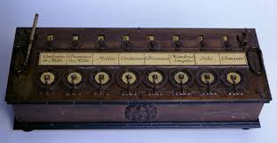
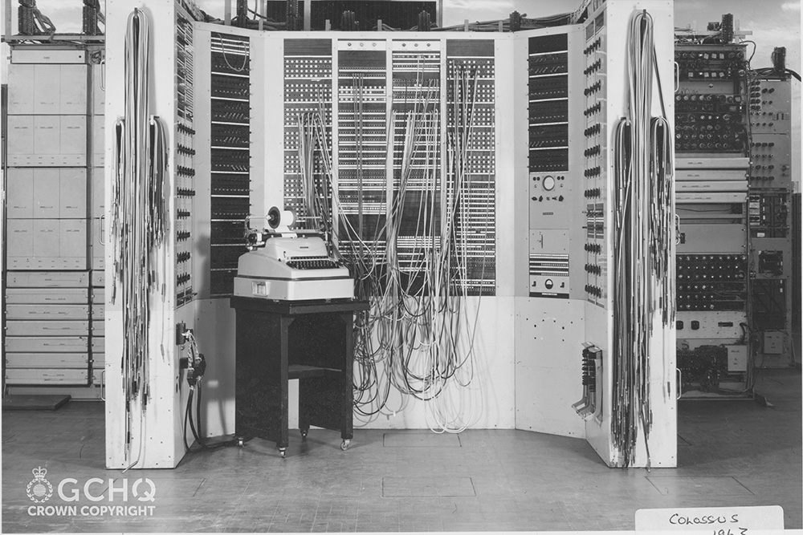
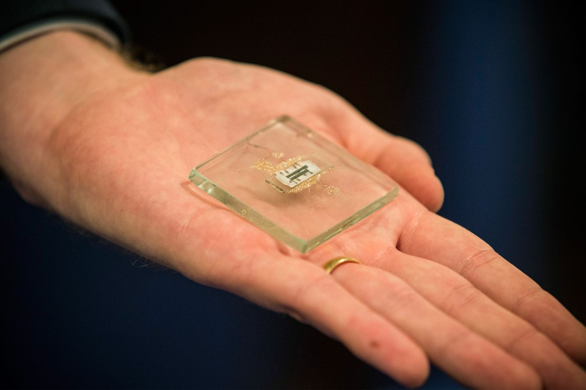
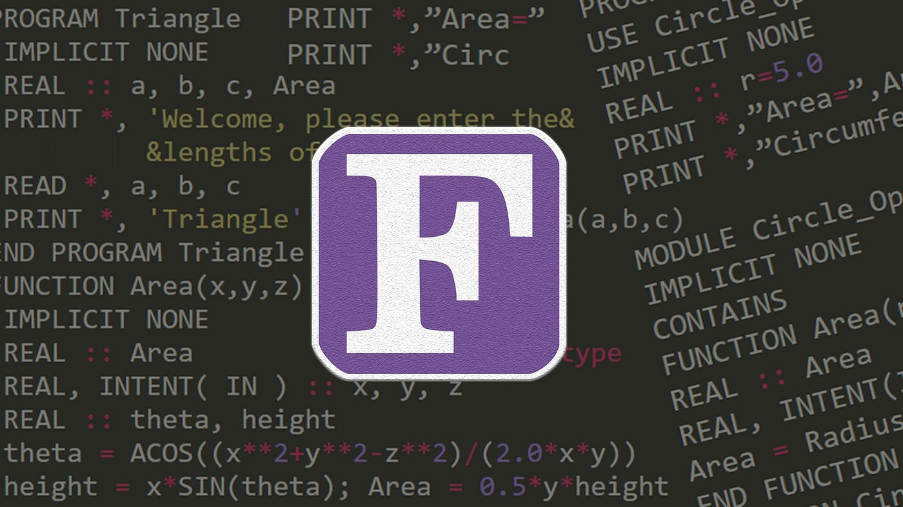
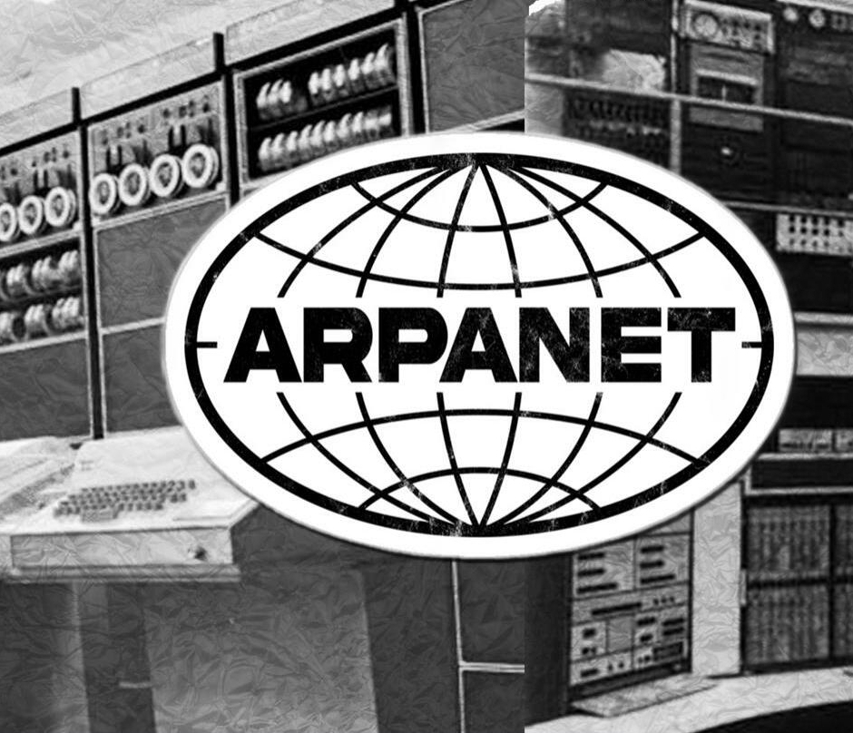
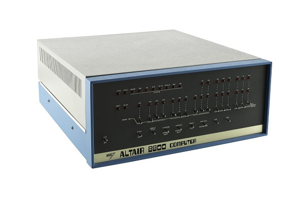
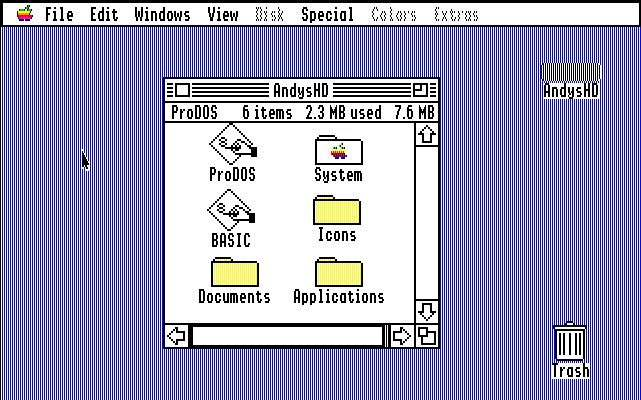

Historical Perspective on Computing
The evolution of computing is a fascinating journey marked by significant milestones, influential figures, and profound impacts on society. Below is a structured overview of this evolution, including a timeline of key events.

Key Milestones in the Evolution of Computing
Computing has a rich history filled with key milestones that have significantly shaped its development. From the earliest mechanical devices to the latest advances in artificial intelligence, each phase in computing has contributed to the technologies we use today. Below, we explore some of the most important stages in the evolution of computing, highlighting the innovations and breakthroughs that have driven progress.
Early Concepts and Mechanical Devices
The origins of computing can be traced back to the invention of early mechanical devices designed to assist with calculations. These early machines, such as the abacus and later mechanical calculators, laid the groundwork for more sophisticated computational tools. The development of these devices set the stage for the conceptual foundations of modern computing.
- 800 AD: The concept of zero is developed in India, which is fundamental to binary systems.
The notion of zero, known as shunya in Sanskrit, was not merely a numeral but also embodied philosophical ideas about emptiness and nothingness. Early Indian mathematicians, such as Aryabhata (476–550 CE) and Brahmagupta (598–668 CE), played crucial roles in formalizing the concept of zero within the decimal place value system. While Aryabhata's works hinted at the idea of zero as a placeholder, Brahmagupta was the first to treat zero as a number in its own right, establishing rules for arithmetic operations involving zero and negative numbers.
The earliest known inscription of zero as a digit is found in a temple in Gwalior, India, dating back to the 9th century. This inscription includes the number '270', where the zero is represented as a small, raised circle, indicating its use as a placeholder in the positional numeral system. However, earlier evidence suggests that a dot was used as a placeholder in mathematical manuscripts, such as the Bhakshali manuscript, which dates back to the 3rd or 4th century.
- 1642: Blaise Pascal invents the Pascaline, one of the first mechanical calculators.

In 1642, Blaise Pascal invented the Pascaline, one of the earliest mechanical calculators, to assist his father, a tax collector, with complex arithmetic tasks. This innovative device could perform addition and subtraction directly, while multiplication and division were executed through repeated addition or subtraction. The Pascaline featured a series of spoked dials that represented digits from 0 to 9; users would input numbers by turning these dials, which would then display the results in windows above them. Pascal's design included a sophisticated carry mechanism that allowed for seamless addition across multiple digits, a significant advancement for its time. Despite creating around 50 prototypes, the Pascaline faced limitations in production and sales due to its complexity and high cost, leading to its eventual decline in use. Nonetheless, Pascal's invention laid the groundwork for future developments in mechanical calculators and computing technology.
- 1837: Charles Babbage designs the Analytical Engine, which includes concepts of a programmable computer.

In 1837, Charles Babbage designed the Analytical Engine, which is regarded as the first conceptual design of a general-purpose, programmable computer. This groundbreaking machine featured several innovative components, including an arithmetic logic unit (the mill), memory (the store), and the ability to be programmed using punched cards, allowing it to perform a variety of calculations based on user-defined instructions. Babbage's design introduced key concepts still fundamental to modern computing, such as conditional branching and automation.
The Analytical Engine was never completed during Babbage's lifetime due to technological limitations and funding issues. However, its influence is profound, as it laid the groundwork for future developments in computer science and technology. Babbage's pioneering work marked him as a visionary in the field of computing, with the Analytical Engine serving as a conceptual precursor to modern computers.
Theoretical Foundations
Theoretical advances in mathematics and logic during the early 20th century provided the fundamental underpinnings of modern computing. Pioneering work by figures like Alan Turing and Claude Shannon established the principles that guide computer science today, including the concepts of algorithmic processes and digital circuit design.
- 1936: Alan Turing introduces the concept of the Turing Machine, establishing the foundation for modern computing theory.

In 1936, Alan Turing introduced the concept of the Turing Machine in his seminal paper "On Computable Numbers," which laid the groundwork for modern computing theory. The Turing Machine is an abstract mathematical model that consists of an infinitely long tape divided into squares, where symbols can be written, read, and erased by a head that moves along the tape. This model was designed to address the Entscheidungsproblem, a challenge posed by mathematician David Hilbert regarding whether there exists a definitive method to determine the truth of any mathematical statement. Turing's work demonstrated that while some problems are computable, others are undecidable, meaning no algorithm can solve them. This insight established fundamental limits on what can be computed and has shaped the field of computer science, influencing the development of actual computers and the theoretical understanding of computation itself, known as the Church-Turing thesis.
- 1937: Claude Shannon demonstrates that Boolean algebra could be used for circuit design, leading to digital circuit design.

In 1937, Claude Shannon published a groundbreaking paper demonstrating that Boolean algebra could be applied to the design of electrical circuits, effectively establishing the foundation for digital circuit design. By showing that logical operations such as AND, OR, and NOT could be represented using electrical switches and relays, Shannon transformed circuit design from an intuitive art into a systematic science. His work provided a clear methodology for simplifying complex circuits by using Boolean expressions, allowing engineers to design more efficient and reliable switching circuits. This innovation not only facilitated the development of early computers but also laid the groundwork for modern digital electronics, as it enabled the creation of logic gates and circuits that are now fundamental components of all digital systems. Shannon's insights marked a pivotal moment in the evolution of computing technology, influencing both theoretical and practical aspects of electrical engineering and computer science.
World War II and Early Computers
The Second World War acted as a catalyst for significant advancements in computing technology. During this period, the first programmable digital computers were developed, primarily for codebreaking and military applications. These early machines demonstrated the potential of electronic computing and set the stage for post-war developments.
- 1943-1944: The Colossus, the world’s first programmable digital computer, is used by British codebreakers to decrypt German messages.

Between 1943 and 1944, the Colossus was developed as the world’s first programmable digital computer, specifically designed to assist British codebreakers in decrypting German messages encoded with the Lorenz cipher, known as "Tunny." Designed by engineer Tommy Flowers and his team at Bletchley Park, the Colossus utilized over 2,000 vacuum tubes to perform Boolean logic operations and calculations, enabling it to process encrypted messages at unprecedented speeds. The first operational version, Colossus Mark I, became functional in December 1943 and successfully solved its first problem by February 1944. By employing a system of switches and plugs for programming, Colossus could be reconfigured for various cryptanalytic tasks, significantly reducing the time required to determine the settings of the Lorenz machine's wheels. Ultimately, the Colossus played a crucial role in deciphering millions of characters of high-level German communications, providing the Allies with vital intelligence that contributed to their success in World War II. Despite its groundbreaking nature, the existence of the Colossus remained a closely guarded secret for decades, and it was not until the 1970s that its significance in the history of computing began to be recognized.
- 1946: The ENIAC (Electronic Numerical Integrator and Computer) is completed, marking the first general-purpose electronic computer.

In 1946, the ENIAC (Electronic Numerical Integrator and Computer) was completed at the University of Pennsylvania's Moore School of Electrical Engineering, marking a significant milestone as the first general-purpose electronic computer. Designed by J. Presper Eckert and John Mauchly under a U.S. Army contract during World War II, the ENIAC was a massive machine, weighing 30 tons and occupying a 1,500-square-foot room. It contained over 18,000 vacuum tubes, 70,000 resistors, 10,000 capacitors, 1,500 relays, and 6,000 switches, generating immense heat that required its air conditioning system. Despite its size and complexity, the ENIAC was capable of performing 5,000 additions per second and could multiply 360 ten-digit numbers in the same timeframe. Although originally designed to calculate artillery firing tables, the ENIAC's flexibility allowed it to be reprogrammed for various tasks, including numerical weather simulations and calculations for the hydrogen bomb. The ENIAC's public unveiling on February 14, 1946, marked the dawn of the electronic computing age and inspired the development of more advanced computers in the years that followed.
Transistors and Integrated Circuits
The invention of the transistor in the late 1940s marked a turning point in the history of computing. Transistors replaced bulky vacuum tubes, allowing for smaller, more efficient machines. This was followed by the development of integrated circuits, which enabled the miniaturization of computers and paved the way for the modern computing era.
- 1947: The invention of the transistor by John Bardeen, Walter Brattain, and William Shockley revolutionizes computing by replacing vacuum tubes.

In 1947, John Bardeen, Walter Brattain, and William Shockley invented the transistor at Bell Laboratories, a breakthrough that revolutionized the field of electronics by replacing the bulky and power-hungry vacuum tubes used in earlier devices. The transistor is a semiconductor device that can amplify and switch electronic signals, making it significantly smaller, more reliable, and energy-efficient compared to vacuum tubes. The first successful demonstration of the transistor, known as the point-contact transistor, occurred on December 23, 1947, and it marked the beginning of the semiconductor revolution. This invention not only paved the way for the miniaturization of electronic components but also enabled the development of modern computing, telecommunications, and consumer electronics. The transistor's impact was so profound that Bardeen, Brattain, and Shockley were awarded the Nobel Prize in Physics in 1956 for their pioneering work, which laid the foundation for the vast array of electronic devices we rely on today.
- 1958: Jack Kilby and Robert Noyce develop the integrated circuit, leading to smaller and more powerful computers.

In 1958, Jack Kilby at Texas Instruments and Robert Noyce at Fairchild Semiconductor independently developed the integrated circuit, a revolutionary breakthrough that paved the way for smaller, faster, and more powerful computers. Kilby's prototype, created while his colleagues were on vacation, demonstrated that all components of a circuit could be fabricated on a single piece of semiconductor material. Noyce later filed a patent for his integrated circuit design, which used the planar process to enable mass production. While Noyce's patent was granted first, Kilby and Noyce are both recognized as co-inventors of the integrated circuit. This invention, often called the "birth of microelectronics," allowed for the miniaturization of electronic components and enabled the creation of microchips that now power a vast array of devices, from computers to smartphones to spacecraft. The integrated circuit's impact on computing and technology cannot be overstated, as it kickstarted the exponential growth in processing power and storage capacity predicted by Moore's Law.
Programming Languages and Software Development
As computers became more sophisticated, the need for more advanced programming languages and software development practices emerged. Early high-level programming languages such as COBOL and FORTRAN made it easier to write complex programs and contributed to the rapid expansion of computer applications across different industries.
- 1952: Grace Hopper develops COBOL, one of the first high-level programming languages.

In 1952, Grace Hopper and her team at Remington Rand developed the A-0 compiler, which is considered one of the first steps towards the creation of COBOL (Common Business Oriented Language). COBOL, which Hopper helped standardize and promote in the late 1950s, was designed to be a high-level programming language that used English-like words and phrases rather than mathematical symbols. Hopper believed that business data processors, who were not typically mathematicians or computer scientists, would find COBOL more accessible and user-friendly. While COBOL was a collaborative effort, Hopper was instrumental in its development and widespread adoption. Her work on COBOL and other early compilers demonstrated her vision for making computers more accessible to a broader audience beyond just mathematicians and engineers. COBOL went on to become one of the most widely used programming languages, particularly in business applications, and Hopper's pioneering work laid the foundation for its success.
- 1957: The first version of FORTRAN is released, facilitating scientific and engineering computations.

In 1957, the first version of FORTRAN (short for "Formula Translation") was released, marking a significant milestone in the evolution of programming languages and facilitating scientific and engineering computations. Developed by a team at IBM led by John Backus, FORTRAN was designed to allow users to write programs using a more human-readable syntax that resembled mathematical notation, thereby simplifying the programming process for scientists and engineers who were previously limited to complex machine code. The initial compiler for FORTRAN was delivered in April 1957 for the IBM 704 mainframe, and it introduced features such as the ability to handle complex mathematical formulas and optimize code for efficient execution. This high-level language quickly gained popularity due to its ease of use and efficiency, leading to widespread adoption in various scientific fields and influencing the development of subsequent programming languages. By enabling non-programmers to engage directly with computers, FORTRAN played a crucial role in democratizing access to computing power and is still utilized in many applications today, particularly in numerical and scientific computing.
Networking and the Internet
The concept of networking computers emerged as scientists and engineers sought ways to share information more effectively. The development of the ARPANET, which eventually evolved into the modern Internet, revolutionized communication and data exchange, creating a globally interconnected world.
- 1969: The ARPANET, the precursor to the modern Internet, is established, allowing multiple computers to communicate.

In 1969, the ARPANET (Advanced Research Projects Agency Network) was established, marking a pivotal moment in the evolution of computer networking and laying the groundwork for the modern Internet. Developed under the auspices of the U.S. Department of Defense, the ARPANET was the first network to implement packet-switching technology, allowing multiple computers to communicate efficiently by breaking data into smaller packets that could be sent independently across a shared network. The first successful message transmission occurred on October 29, 1969, when a UCLA student attempted to log in to a computer at the Stanford Research Institute, resulting in the transmission of the first two letters "L" and "O" before the system crashed. This initial connection between four nodes—UCLA, SRI, UC Santa Barbara, and the University of Utah—set the stage for rapid growth and innovation in networking. The ARPANET not only facilitated resource sharing among researchers but also introduced key protocols that would later become integral to the Internet, such as TCP/IP, ultimately transforming how information is communicated.
- 1983: The Domain Name System (DNS) is introduced, simplifying Internet navigation.
In 1983, the Domain Name System (DNS) was introduced, revolutionizing how users navigate the internet. Before DNS, the early internet relied on a centralized HOSTS.TXT file that mapped hostnames to IP addresses, which became increasingly unwieldy as the network grew. Paul Mockapetris, a researcher at the University of Southern California, proposed a distributed and hierarchical naming system that allowed for the decentralized management of domain names and IP address mappings. This innovation enabled the use of easily memorable domain names like "example.com" instead of numerical IP addresses, making the internet far more accessible to everyday users. The introduction of DNS in 1983, formalized in RFCs 882 and 883, laid the foundation for the modern internet by allowing the network to scale and expand beyond its academic origins. It has since become a critical component of Internet infrastructure, enabling the rapid growth of the World Wide Web and online services we rely on today.
Personal Computing Revolution
The advent of personal computers in the mid-1970s revolutionized how individuals interacted with technology. With the introduction of machines like the Altair 8800 and the IBM PC, computing moved from specialized and industrial applications to everyday use in homes and offices, democratizing access to technology.
- 1975: The Altair 8800, considered the first personal computer, is launched, sparking interest in home computing.

In 1975, the Altair 8800 was launched by Micro Instrumentation and Telemetry Systems (MITS), widely regarded as the first commercially successful personal computer, which ignited the home computing revolution. Designed around Intel's 8080 microprocessor, the Altair was initially sold as a kit, allowing hobbyists to assemble it themselves for a price of approximately $395, or fully assembled for about $498. Its unique modular design and the ability to expand memory and add peripherals captured the interest of tech enthusiasts and sparked a burgeoning personal computer market. The Altair 8800 gained significant attention after being featured on the cover of Popular Electronics magazine in January 1975, leading to a surge in orders and inspiring the creation of software companies, including Microsoft, founded by Bill Gates and Paul Allen, who developed the first version of BASIC for the Altair. This pivotal moment laid the groundwork for the personal computing industry, encouraging innovation and the establishment of numerous computer companies in the years that followed.
- 1981: IBM introduces its first personal computer, which sets standards for PC architecture.

In 1981, IBM introduced its first personal computer, the IBM 5150, which set new standards for PC architecture and marked a significant turning point in the personal computing revolution. Launched on August 12, 1981, the IBM 5150 was powered by the Intel 8088 microprocessor and initially came with 16 KB of RAM, expandable to 256 KB, and featured a modular design that allowed users to add peripherals and expansion cards. Priced at $1,565, it was designed to be both affordable and accessible, using off-the-shelf components that facilitated production and reduced costs. The open architecture of the IBM PC encouraged third-party developers to create compatible hardware and software, leading to a thriving ecosystem that spurred innovation and competition in the personal computer market. The introduction of the IBM 5150 not only legitimized personal computing for businesses and consumers but also established a de facto standard that influenced the design and functionality of PCs for decades to come, ultimately shaping the modern computing landscape.
Graphical User Interfaces and the Web
The development of graphical user interfaces (GUIs) in the 1980s and the invention of the World Wide Web in the early 1990s transformed the way users interacted with computers. GUIs made computers more accessible to the general public, while the Web opened up new possibilities for communication, information sharing, and commerce.
- 1984: Apple launches the Macintosh, popularizing the graphical user interface (GUI).

In 1984, Apple launched the Macintosh, a groundbreaking personal computer that popularized the graphical user interface (GUI) and transformed how users interacted with computers. Introduced on January 24, 1984, the Macintosh featured a user-friendly design that relied on icons and a mouse for navigation, allowing users to execute commands by clicking rather than typing complex text commands, which was the norm at the time. The launch was famously preceded by the iconic "1984" television commercial directed by Ridley Scott, which aired during Super Bowl XVIII and positioned the Macintosh as a revolutionary tool that would liberate users from the conformity of traditional computing, symbolized by IBM. Despite its initial struggles in the market due to its high price and limited software availability, Macintosh's innovative interface laid the foundation for future personal computers and established Apple as a leader in the tech industry, influencing the design and functionality of computing devices for years to come.
- 1991: Tim Berners-Lee introduces the World Wide Web, revolutionizing information sharing and access.

In 1991, Tim Berners-Lee introduced the World Wide Web, a revolutionary system that transformed how information is shared and accessed globally. While working at CERN, Berners-Lee developed the foundational technologies of the web, including Hypertext Transfer Protocol (HTTP), Hypertext Markup Language (HTML), and the concept of Uniform Resource Identifiers (URIs), which allowed documents to be linked and accessed over the Internet. The first website went live on August 6, 1991, providing information about the web project itself and inviting collaboration. This innovation enabled users to easily navigate and share information through hyperlinks, making the web accessible to non-technical users and fostering a new era of communication and collaboration. The World Wide Web quickly gained traction, leading to the proliferation of websites and online services, and ultimately revolutionized industries, education, and daily life by democratizing access to information and creating a platform for global connectivity.
Mobile Computing and Modern Developments
The introduction of smartphones and advancements in mobile computing has fundamentally changed the way we interact with technology. Today, mobile devices serve as powerful computing platforms, integrating communication, productivity, and entertainment into one device. This shift has influenced every aspect of daily life and continues to drive innovation.
- 2007: The launch of the iPhone marks the beginning of the smartphone era, integrating computing with mobile technology.

In 2007, Apple revolutionized the mobile phone industry with the launch of the iPhone, marking the beginning of the smartphone era. Unveiled by Steve Jobs at the Macworld conference on January 9, 2007, the iPhone combined a revolutionary multi-touch interface, a full web browser, and a music player into a sleek, all-in-one device. The iPhone's groundbreaking features, such as the large touchscreen, virtual keyboard, and intuitive iOS operating system, set it apart from traditional "dumb phones" and smartphones of the time. By integrating computing power, mobile communication, and a user-friendly design, the iPhone paved the way for the widespread adoption of smartphones and transformed how people interact with mobile technology. The iPhone's success also inspired the development of competing platforms like Android, further driving innovation in the mobile industry and shaping the modern smartphone landscape.
- 2010s-Present: Rapid advancements in artificial intelligence, cloud computing, and quantum computing continue to shape the future of technology.

From the 2010s to the present, rapid advancements in artificial intelligence (AI), cloud computing, and quantum computing have significantly reshaped the technological landscape and influenced various aspects of daily life. The rise of AI has been marked by breakthroughs in deep learning, natural language processing, and machine learning, enabling applications such as voice assistants, facial recognition, and autonomous vehicles. Cloud computing has transformed how businesses and individuals access and store data, allowing for scalable resources and facilitating collaboration across the globe. Meanwhile, quantum computing has emerged as a frontier technology, promising to solve complex problems beyond the capabilities of classical computers, with potential applications in cryptography, drug discovery, and optimization. Together, these advancements are driving innovation across industries, enhancing productivity, and creating new opportunities while also raising important questions about privacy, security, and the ethical implications of increasingly intelligent systems.
Influential Figures in Computing
Throughout the history of computing, numerous individuals have made significant contributions that have shaped the field. From early pioneers like Charles Babbage and Ada Lovelace to modern innovators like Tim Berners-Lee, these figures have played critical roles in the development of computing technologies and concepts.
Charles Babbage

Often referred to as the "father of computing," was an English mathematician, philosopher, inventor, and mechanical engineer who conceptualized the first mechanical computer, the Analytical Engine, in the 1830s. Babbage's vision for the Analytical Engine included essential components of modern computers, such as an arithmetic logic unit (ALU), memory storage, and the ability to be programmed using punched cards, a concept inspired by the Jacquard loom. Although Babbage faced numerous challenges, including funding issues and technological limitations of his time, his designs laid the groundwork for future computing innovations. He also created the Difference Engine, intended for calculating and printing mathematical tables, which showcased his belief in mechanizing computation to reduce human error. Babbage's pioneering ideas and inventions, although never fully realized during his lifetime, have had a lasting impact on the development of computer science and technology, solidifying his legacy as a visionary in the field.
Ada Lovelace
 Born Augusta Ada Byron in 1815, is celebrated as the first computer programmer for her pioneering work on Charles Babbage's Analytical Engine. Lovelace's unique upbringing, influenced by her mathematically inclined mother, allowed her to pursue an education in mathematics and science at a time when such opportunities were rare for women. In 1842, she translated an article by Italian engineer Luigi Federico Federico Manabrea about the Analytical Engine, but she went beyond mere translation by adding extensive notes that detailed how the machine could be programmed to perform complex calculations, including an algorithm for computing Bernoulli numbers. This algorithm is considered the world's first computer program, showcasing her visionary understanding of the machine's potential to manipulate not just numbers, but symbols and data of all kinds. Lovelace's insights anticipated the future of computing, as she recognized that the Analytical Engine could be used for purposes beyond arithmetic, such as composing music or processing text, thus laying the groundwork for the multifaceted applications of computers we see today. Despite her significant contributions, her work remained largely unrecognized during her lifetime, only gaining prominence in the 20th century as the field of computer science emerged.
Born Augusta Ada Byron in 1815, is celebrated as the first computer programmer for her pioneering work on Charles Babbage's Analytical Engine. Lovelace's unique upbringing, influenced by her mathematically inclined mother, allowed her to pursue an education in mathematics and science at a time when such opportunities were rare for women. In 1842, she translated an article by Italian engineer Luigi Federico Federico Manabrea about the Analytical Engine, but she went beyond mere translation by adding extensive notes that detailed how the machine could be programmed to perform complex calculations, including an algorithm for computing Bernoulli numbers. This algorithm is considered the world's first computer program, showcasing her visionary understanding of the machine's potential to manipulate not just numbers, but symbols and data of all kinds. Lovelace's insights anticipated the future of computing, as she recognized that the Analytical Engine could be used for purposes beyond arithmetic, such as composing music or processing text, thus laying the groundwork for the multifaceted applications of computers we see today. Despite her significant contributions, her work remained largely unrecognized during her lifetime, only gaining prominence in the 20th century as the field of computer science emerged.
Alan Turing

Was a pioneering figure in computer science, renowned for his groundbreaking contributions to theoretical computing and cryptography, particularly during World War II. His formulation of the Turing Machine provided a foundational model for understanding computation and algorithms, establishing him as a key figure in the development of theoretical computer science. Turing's work was instrumental in breaking the German Enigma code at Bletchley Park, where he led efforts to develop techniques and machines that could decipher encrypted messages, significantly aiding the Allied war effort. His innovative approach to cryptanalysis not only contributed to pivotal victories, such as the Battle of the Atlantic but also laid the groundwork for modern computing concepts. After the war, Turing continued to influence the field by designing one of the first stored-program computers, the Automatic Computing Engine, and exploring the intersection of mathematics and biology. Despite his profound impact, Turing faced persecution for his sexuality and was posthumously recognized for his contributions, with his legacy cemented as a foundational figure in computer science and artificial intelligence.
Grace Hopper

A pioneering computer scientist, who made significant contributions to the field of programming languages. In 1952, she developed the first compiler, the A-0, which translated symbolic mathematical code into machine code, allowing programmers to specify call numbers assigned to stored programming routines. This breakthrough paved the way for the development of higher-level programming languages. Hopper later led the team that created FLOW-MATIC, the first English-language data processing compiler, which heavily influenced the creation of COBOL (Common Business Oriented Language) in 1959. As a technical advisor to the CODASYL committee, Hopper played a crucial role in defining the COBOL language specifications. Her tireless efforts to convince business managers of the feasibility and benefits of English-based compilers and COBOL were instrumental in the widespread adoption of the language throughout the 1960s, revolutionizing business computing. Hopper's innovative work on compilers and her advocacy for user-friendly programming languages cemented her legacy as a visionary in computer science.
Tim Berners-Lee

Born on June 8, 1955, is a British computer scientist best known as the inventor of the World Wide Web, a revolutionary system that transformed how information is shared and accessed globally. While working at CERN in 1989, he proposed a global hypertext project that would facilitate information sharing among researchers, leading to the development of key technologies such as Hypertext Transfer Protocol (HTTP), Hypertext Markup Language (HTML), and Uniform Resource Identifiers (URIs). Berners-Lee implemented the first successful communication between a web client and server in 1990 and created the first web browser and web server, launching the first website in December of that year. His vision was to make the web accessible to everyone, which he ensured by making the technologies royalty-free and open for anyone to use. In 1994, he founded the World Wide Web Consortium (W3C) to oversee the development of web standards and promote the web's growth. Berners-Lee's contributions have earned him numerous accolades, including knighthood from Queen Elizabeth II in 2004 and the Turing Award in 2016, solidifying his status as a pivotal figure in the history of technology.
Impact of Computing on Society
Computing has had a profound impact on society, influencing everything from communication and education to healthcare and industry. As technology continues to advance, its impact on our daily lives grows more significant, presenting both opportunities for growth and challenges to address.
Computing has profoundly influenced various aspects of society:
- Communication: Computers have revolutionized communication through email, social media, and instant messaging, enabling global connectivity.
- Education: The integration of computers in education has transformed teaching methods, making learning more interactive and accessible.

- Industry and Economy: Automation and computerization have increased efficiency in manufacturing and services, leading to new job creation but also displacement in traditional sectors.
- Healthcare: Computers have improved patient care through electronic health records, telemedicine, and advanced diagnostic tools.
- Privacy and Security: The rise of computing has raised concerns about data privacy, surveillance, and cybersecurity threats.

Future Prospects and Challenges
Looking ahead, the future of computing promises to be just as dynamic as its past. Emerging technologies such as artificial intelligence, quantum computing, and blockchain are poised to redefine the landscape once again. However, with these advancements come new challenges, including ethical considerations, security concerns, and the need for sustainable practices.
Introduction to IT Basics →